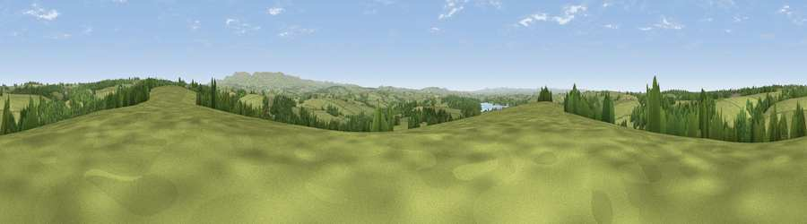

Viewpoint near Germansweek
#20605 in England · top 34% of its area beats it · near GermansweekThe view, rendered

A 360° render of this exact spot computed from the terrain model, tree cover and land cover — summer colours, afternoon light, calibrated against photographs of famous viewpoints. Real trees, hedges and buildings will differ in detail.
The panorama
Grey silhouette: terrain skyline in each direction (720 bearings, Earth curvature and refraction included). Dashed green: skyline with trees (+15 m) and buildings (+8 m) as obstacles. Blue strip: how far the ground is visible on each bearing.
Where the view opens
Wedge length = distance to the farthest visible ground on that bearing (vegetation-aware). Rings at 10, 25 and 50 km.
What fills the view
78% grassland · 19% woodland · 2% cropland ·
Angular shares of the visible panorama (visual magnitude), not map area. Landscape diversity 0.28 (0–1 Shannon).
Key numbers
More beautiful places nearby
The staircase of upgrades: each row has a higher view potential than everything closer. Driving times are estimates from straight-line distance, calibrated against real road routing — check an actual route before setting out.
| Place | Direction | Drive | Score |
|---|---|---|---|
| Viewpoint near Germansweek | WSW · 1 km | ~2 min | 53.6 |
| Viewpoint near Bratton Clovelly | ENE · 4 km | ~9 min | 60.9 |
| Sourton Tors | ESE · 10 km | ~20 min | 74.8 |
| Viewpoint near Sourton | ESE · 11 km | ~21 min | 75.7 |
| Great Links Tor | ESE · 12 km | ~23 min | 77.8 |
| Yes Tor | ESE · 14 km | ~25 min | 78.5 |
| Kit Hill | SSW · 24 km | ~39 min | 80.3 |
| Viewpoint near Dousland | SSE · 26 km | ~42 min | 81.0 |
50.72282, -4.19976 · source: screening · position refined by local search. Computed location — check access rights before visiting.